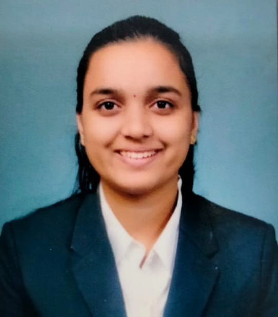

Contact No:9342307468
Email-id:priya6sarmalkar@gmail.com
LinkedIn:https://www.linkedin.com/in/priyasarmalkar-ba3a60227
Address:Belagavi,Karnataka
Career Objective:
To Secure a challenging position in a reputable organization to expand my knowledge and adapt to environment
Master of Computer Application(MCA)
KLS Gogte Institute of Technlogy
Year Of Passing:2026
Percentage:87.6%(aggregate)
Govindram Seksria PU College,Belagavi
Year Of Passing:2021
Percentage:73.1%
M.V. Herwadkar English Medium High School
Year Of Passing:2019
Percentage:79.36%